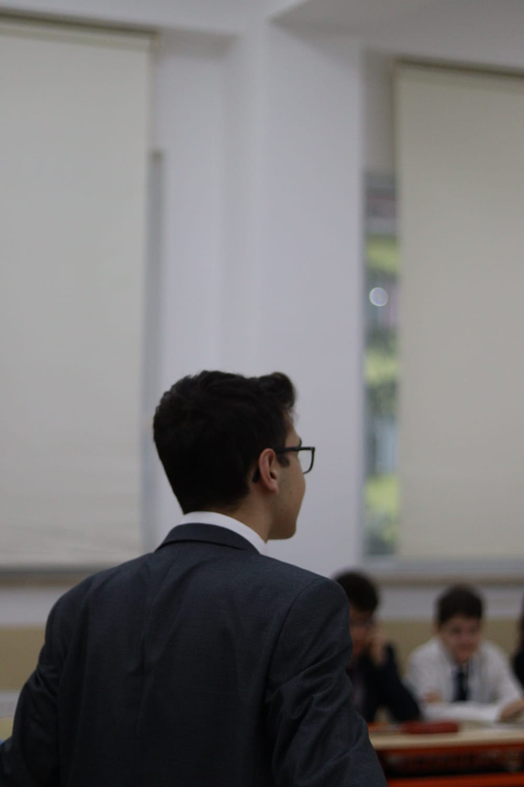

Mustafa Kemal ATATÜRK
Mustafa Kemal Atatürk is recognized as an unparalleled leader in Turkey's process of modernization and westernization. He is an innovative statesman who led Turkey's War of Independence and laid the foundations for a national identity and a modern republic. Atatürk is a leader respected not only in Turkey but also worldwide. With his courage, vision, and determination, he inspired the Turkish people and brought them together in the struggle for independence.
.jpg)
.jpg)
Under Mustafa Kemal's leadership, the Turkish nation achieved an unforgettable victory in history. He united the Turkish nation in resistance against enemy occupation, rallying people from all corners of Anatolia around a common goal. Not only known for his military genius, Atatürk's role as an educator and reformer is also noteworthy. He took significant steps to modernize Turkish society, bringing about radical changes in areas such as education, language, law, and women's rights.
Atatürk's ideas and principles are considered the cornerstones of the Republic of Turkey. Principles like secularism, nationalism, statism, and populism are important principles that, under Atatürk's leadership, helped Turkey become a modern nation-state. His love for humanity, his homeland, and his selfless work will forever live in the hearts of the Turkish people. Atatürk is not just a leader but also a guide and a source of inspiration. His legacy will continue to inspire future generations and illuminate the path of Turkey.
.jpg)
.jpg)
Mustafa Kemal Atatürk is recognized as the exceptional leader of the Turkish nation and the founder of modern Republic of Turkey. While his exact birth date is unknown, he stated that he was born on May 19, 1881, in the city of Selanik, then part of the Ottoman Empire. His father was Ali Rıza Efendi, and his mother was Zübeyde Hanım. Atatürk's education was highly successful. After completing military secondary school, he entered military schools in Istanbul and graduated from the Military Academy. He then continued his military career and served in various positions.
Mustafa Kemal gained attention for his achievements in the Balkan Wars and World War I, particularly for his heroism in the Battle of Gallipoli. His leadership and strategic brilliance at Gallipoli made him an unparalleled hero in the eyes of the Turkish people. However, his true victory came during the War of Independence. Following the defeat of the Ottoman Empire in World War I and its subsequent occupation, the Turkish nation under the leadership of Mustafa Kemal embarked on a struggle for independence. Landing in Samsun on May 19, 1919, he initiated the National Struggle and organized the people throughout Anatolia.
.jpg)
.jpg)
Mustafa Kemal emerged as the leader of the government established in Anatolia and organized resistance against enemy occupation. The victory in the Battle of Sakarya was a significant step towards achieving the independence of the Turkish nation. With the victory in the Battle of Commander-in-Chief on August 30, 1922, the Turkish nation achieved full independence. Mustafa Kemal, not only for his military successes but also for his efforts in education and reforms, gained attention. With the proclamation of the Republic of Turkey, Mustafa Kemal Atatürk became the first President of the Turkish nation.
After the proclamation of the Republic, Atatürk implemented a series of reforms and restructured Turkey as a modern nation. He made revolutions in many areas such as language, attire, law, education, and women's rights. Mustafa Kemal Atatürk passed away on November 10, 1938. However, his legacy will forever live in the hearts of the Turkish people. Atatürk's principles will continue to guide the future direction of Turkey and the progress of the Turkish nation. He is not only a leader of the Turkish nation but also one of the great leaders in world history.
.jpg)
Mustafa Kemal Atatürk is recognized as an unparalleled leader in Turkey's process of modernization and westernization. He is an innovative statesman who led Turkey's War of Independence and laid the foundations for a national identity and a modern republic. Atatürk is a leader respected not only in Turkey but also worldwide. With his courage, vision, and determination, he inspired the Turkish people and brought them together in the struggle for independence.

Under Mustafa Kemal's leadership, the Turkish nation achieved an unforgettable victory in history. He united the Turkish nation in resistance against enemy occupation, rallying people from all corners of Anatolia around a common goal. Not only known for his military genius, Atatürk's role as an educator and reformer is also noteworthy. He took significant steps to modernize Turkish society, bringing about radical changes in areas such as education, language, law, and women's rights.

Atatürk's ideas and principles are considered the cornerstones of the Republic of Turkey. Principles like secularism, nationalism, statism, and populism are important principles that, under Atatürk's leadership, helped Turkey become a modern nation-state. His love for humanity, his homeland, and his selfless work will forever live in the hearts of the Turkish people. Atatürk is not just a leader but also a guide and a source of inspiration.
His legacy will continue to inspire future generations and illuminate the path of Turkey. Mustafa Kemal Atatürk is recognized as the exceptional leader of the Turkish nation and the founder of modern Republic of Turkey. While his exact birth date is unknown, he stated that he was born on May 19, 1881, in the city of Selanik, then part of the Ottoman Empire.
His father was Ali Rıza Efendi, and his mother was Zübeyde Hanım. Atatürk's education was highly successful. After completing military secondary school, he entered military schools in Istanbul and graduated from the Military Academy. He then continued his military career and served in various positions.

Mustafa Kemal gained attention for his achievements in the Balkan Wars and World War I, particularly for his heroism in the Battle of Gallipoli. His leadership and strategic brilliance at Gallipoli made him an unparalleled hero in the eyes of the Turkish people.

However, his true victory came during the War of Independence. Following the defeat of the Ottoman Empire in World War I and its subsequent occupation, the Turkish nation under the leadership of Mustafa Kemal embarked on a struggle for independence. Landing in Samsun on May 19, 1919, he initiated the National Struggle and organized the people throughout Anatolia.

Mustafa Kemal emerged as the leader of the government established in Anatolia and organized resistance against enemy occupation. The victory in the Battle of Sakarya was a significant step towards achieving the independence of the Turkish nation.

With the victory in the Battle of Commander-in-Chief on August 30, 1922, the Turkish nation achieved full independence. Mustafa Kemal, not only for his military successes but also for his efforts in education and reforms, gained attention.

With the proclamation of the Republic of Turkey, Mustafa Kemal Atatürk became the first President of the Turkish nation. After the proclamation of the Republic, Atatürk implemented a series of reforms and restructured Turkey as a modern nation. He made revolutions in many areas such as language, attire, law, education, and women's rights.

Mustafa Kemal Atatürk passed away on November 10, 1938. However, his legacy will forever live in the hearts of the Turkish people. Atatürk's principles will continue to guide the future direction of Turkey and the progress of the Turkish nation. He is not only a leader of the Turkish nation but also one of the great leaders in world history.

Contact
Email: info@kolejmun.com
Address: Fevzi Çakmak Mahallesi Gaziethempaşa Bulvarı Samsun Anadolu Lisesi Blok No 14 İlkadım/Samsun
 İnstagram: @kolejmun
İnstagram: @kolejmun